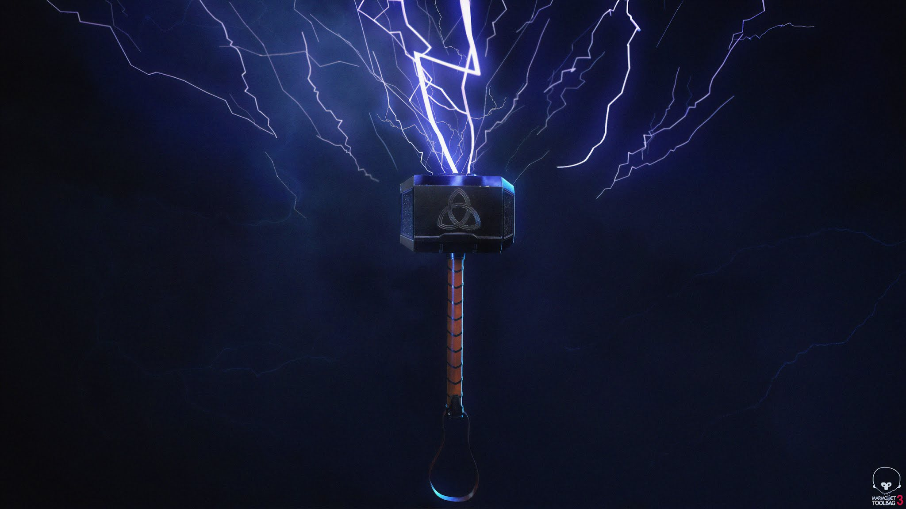

About Thor
Thor Odinson is the Asgardian God of Thunder, the former king of Asgard and New Asgard, and a founding member of the Avengers. When his irresponsible and impetuous behavior reignited a conflict between Asgard and Jotunheim, Thor was denied the right to become king, stripped of his power, and banished to Earth by Odin.
Thor's Mjolnir
Thor's Powers and Abilities
- Superhuman strength, speed, endurance & resistance to injury
- Member of the otherworldly & virtually immortal Asgardian race
- Wields the enchanted Uru-forged hammer Mjolnir, which grants mastery over the elements of thunder & lightning, as well as the ability to fly & open interdimensional gateways.
Thor's companions
Thor has many companions (or you can call them as friends) in the MCU or Marvel's Cinematic Universe. They have a group called Avengers and their duty is to protect the universe from dangerous villains all over the universe.